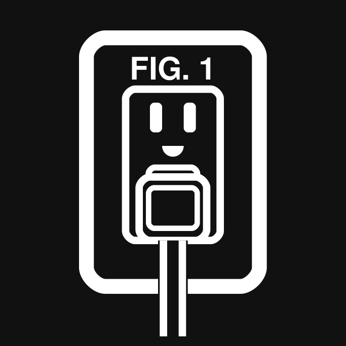

Patent Tools
Live USPTO patent search, document reading and drawing viewing — plus a patent drawing skill that drafts and checks figures under 37 CFR 1.84. Built for Claude.



Live USPTO patent search, document reading and drawing viewing — plus a patent drawing skill that drafts and checks figures under 37 CFR 1.84. Built for Claude.


An MCP server and Claude Desktop extension. Search patents and applications, read the actual text of claims, abstracts and specifications, and view drawing sheets as images — including CCITT fax-compressed scans. Bring your own free USPTO API key.
Drafts patent figures under 37 CFR 1.84, runs an automated compliance checker, compares reference numerals against your specification, and assembles a filing-ready PDF.
Download the extension and double click it (or drag it into Settings > Extensions). Claude Desktop will ask for your free USPTO API key.
https://github.com/Beginnerinvestorhub/patent-tools/releases/latest/download/patent-connector-1.3.1.mcpbInstalls the drawing skill and the connector together. Requires
Node.js 18+ and a USPTO_ODP_API_KEY environment variable.
claude plugin marketplace add Beginnerinvestorhub/patent-tools
claude plugin install patent-tools@patent-toolsZip the skills/patent-drawing folder and upload it
under Customize > Skills.
devin plugins install Beginnerinvestorhub/patent-toolsThe connector needs your own free key from
data.uspto.gov (sign in, then
My ODP). Claude Desktop asks for it during install. Claude Code
users add it under "env" in
~/.claude/settings.json or as a
USPTO_ODP_API_KEY environment variable — see the
README.
Your key and queries go straight from your computer to
api.uspto.gov — there are no servers in between.